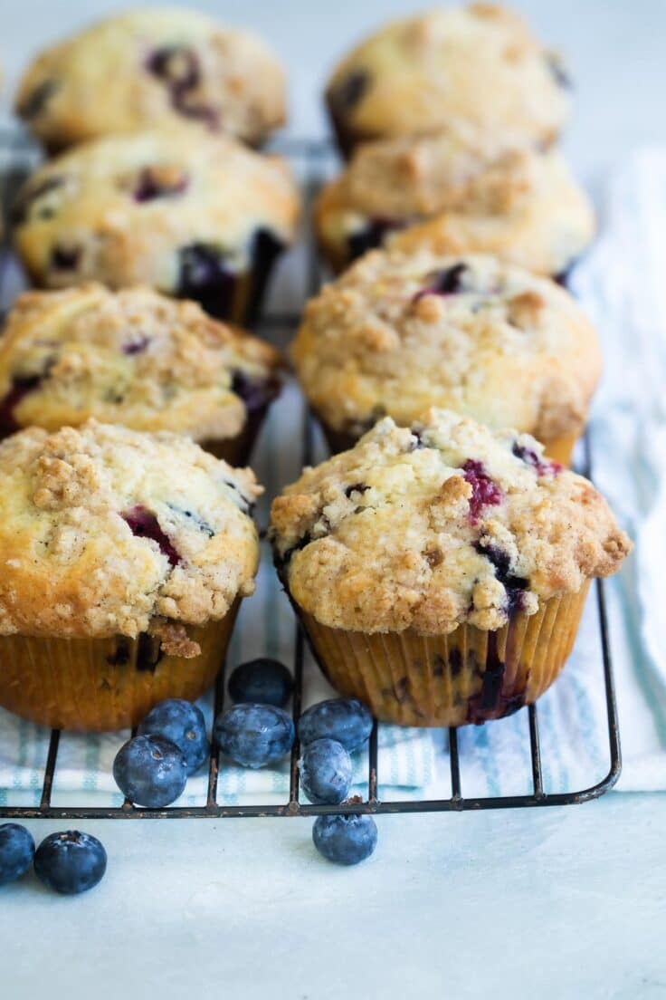

Best Ever Muffins

Delicious and Flavorful Blueberry Muffins
My bakery-style Blueberry Muffins come topped with a buttery brown sugar streusel that takes their flavor over the top. Skip the coffee shop version; these homemade Blueberry Muffins can be yours in just 45 minutes.
Ingredients
- 3 teaspoons baking powder
- ½ teaspoon salt
- ¾ cup white sugar
- 1 egg
- 1 cup milk
- ¼ cup vegetable oil
Steps
- Preheat the oven to 400 degrees F (200 degrees C). Grease a 12-cup muffin tin or line cups with paper liners.
- Stir flour, baking powder, salt, and sugar together in a large bowl; make a well in the center.
- Beat egg with a fork in a small bowl or 2-cup measuring cup; whisk in milk and oil. Pour egg mixture all at once into flour mixture; mix quickly and lightly with a fork until just moistened. The batter will be lumpy. (Fold in additional ingredients if using; see variations below). Spoon batter into the prepared muffin cups, filling each 3/4 full.
- Bake in the preheated oven until tops spring back when lightly pressed, about 25 minutes.
Back Home